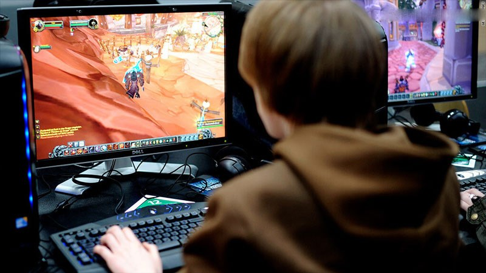
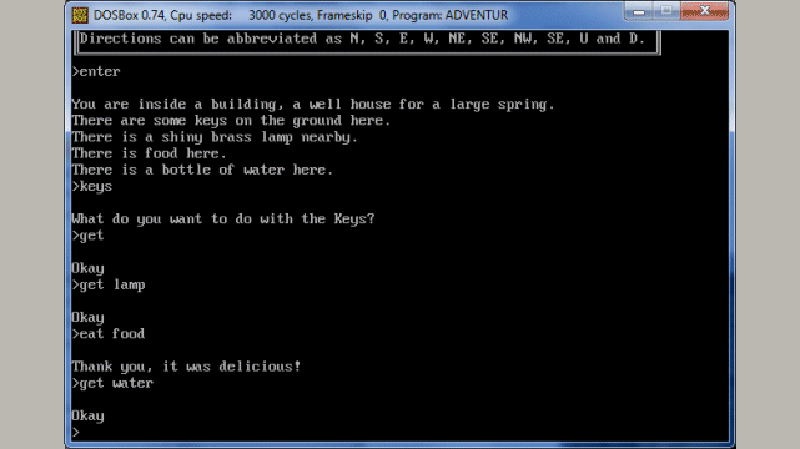

Game Online là gì? Phân loại các dạng game
Game online là một phần không thể thiếu trong đời sống tinh thần của con người, luôn sở hữu một cộng đồng game thủ đông đảo và ngày càng phát triển. Có thể nói đây là một phát minh vĩ đại của nhân loại. Bài viết này sẽ giúp bạn hiểu rõ hơn về game online nhé!
I. Game Online là gì?
1,.định nghĩa
Game online là một phần của video game, được biết đến với tên gọi khác là trò chơi trực tuyến. Để chơi được game online, người chơi cần phải kết nối mạng Internet hoặc bất kỳ mạng máy tính nào khác cho phép nhiều người chơi cùng một lúc. Khi chơi game, người chơi sẽ tương tác với các nhân vật do người chơi khác điều khiển, các môi trường trong game,... theo thời gian thực.
2. Lịch sử phát triển
Game online được tạo ra từ những năm 1970 cho phép nhiều người chơi tham gia cùng lúc thông qua việc kết nối mạng nội bộ hay mạng cục bộ (lúc này chưa có Internet). Trò chơi game online đầu tiên chính là MUD1 ra mắt năm 1978 đã đánh dấu một kỷ nguyên mới cho thể loại game này.
Khi Internet ra đời trong những năm 1990, đây là thời kỳ bùng nổ nhất của game online, hàng loạt những tựa game huyền thoại ra đời khai sinh ra nhiều thể loại game như MOBA, MMORPG,... Ngày nay, với sự phát triển như vũ bảo của công nghệ, đồ họa của game online ngày càng chân thật hơn, cho phép nhiều người chơi cùng lúc hơn.
Tại Việt Nam game thủ lần đầu biết đến game online thông qua những tựa game huyền thoại như Gunbound, Đế Chế, Warcraft,... cộng đồng này lớn mạnh đến nỗi hiện nay vẫn còn hoạt động như Đế Chế, Võ Lâm Truyền Kỳ,... Tuy nhiên, những tựa game đó đã cho thấy sự lỗi thời của mình, dần mất sức hút trong lòng game thủ, nhường chỗ cho các tựa game mới đồ họa đỉnh hơn, gameplay hấp dẫn hơn như CS:GO, Liên Minh Huyền Thoại,...
II. Phân loại game
1.Game miễn phí
Hay còn được biết đến với cái tên F2P (Free to Play), là những tựa game cho phép người chơi tải về chơi hoàn toàn miễn phí. Doanh thu của trò chơi sẽ đến từ việc bán những bộ trang phục, những skin súng, nhân vật,... thông thường những món đồ này chỉ giúp người thêm tinh thần khi chơi game chứ không ảnh hưởng đến lối chơi trong game để công bằng với những người chơi không nạp tiền.
Chính vì yếu tố miễn phí và khá công bằng với mọi người chơi nên thể loại game này có độ phủ rất rộng, phù hợp với nhiều độ tuổi, không phân biệt giới tính,... Vì thế mà cộng đồng những game online miễn phí này rất đông đảo và trung thành, họ giành hàng giờ đồng hồ mỗi ngày để chơi game và ra sức xây dựng, đóng góp để tựa game họ yêu thích ngày càng phát triển.
Một số tựa game đã xây dựng cho mình một đế chế hùng mạnh như: Liên Minh Huyền Thoại, DOTA2, CS:GO,.... chúng phát triển đến mức được công nhận là một môn thể thao điện tử chứ không đơn thuần là để giải trí nữa. Một số tựa game còn có những giải đấu mang tầm vóc khu vực hay vươn rộng ra toàn thế giới, thu hút hàng triệu lượt xem.
Tuy nhiên, vẫn có nhiều tựa game dù tải về miễn phí nhưng để trở thành kẻ mạnh nhất, bá chủ thiên hạ thì người chơi phải nạp tiền vào. Cơ chế này bất công đến mức, chỉ cần bạn chịu nạp tiền thì game sẽ làm bạn thỏa mãn, có những trường hợp người chơi lâu năm vẫn không mạnh bằng những người mới chơi được vài ngày (đơn giản vì người mới chịu chi tiền hơn). Những tựa game tiêu biểu cho trường hợp này như: Võ Lâm Truyền Kỳ, MU, Gunny,...
2. Game tính phí
Là những tựa game người chơi sẽ phải bỏ ra một số tiền nhất định thì mới có thể tải về và chơi. Những tựa game này thường có đồ họa cực khủng hoặc đang là một thế lực to lớn đang tạo ra một lỗi chơi mới lạ cho thể loại game online. Một số tựa game đại diện cho thể loại này chính là PUBG PC, Overwatch,....
Người chơi khi đã bỏ tiền ra mua game thì sẽ được hưởng toàn bộ tính năng trong game mà không phải bỏ thêm bất kỳ chi phí nào, hay nói cách khác, các vật phẩm trong sẽ chỉ được bán với một lượng tiền tệ trong game nhất định (thứ người chơi sẽ kiếm được trong suốt quá trình chơi) hoặc người chơi sẽ được tặng những bộ trang bị huyền thoại hoàn toàn miễn phí. Đương nhiên sẽ vẫn có trường hợp ngoại lệ.
Cũng vì lý do buộc người chơi phải bỏ tiền ra mua game đã vô tình tạo tâm lý lên người chơi rằng họ đã bỏ tiền vào game rồi thì nhà phát hành phải có nghĩa vụ quản lý và phát triển tốt game. Ví dụ như: không cho hack tràn lan, không có lag, không có lỗi game, thường xuyên cập nhật những tính năng mới thú vị,... Những tựa game không làm tốt những kỳ vọng này sẽ dần dần bị cộng đồng tẩy chay và nhanh chóng mất đi vị thế vốn có của mình.